魔搭社区就有这个模型，很方便。这里将模型放到了：
git lfs install
git clone https://modelscope.cn/WisdomShell/CodeShell-7B-Chat.git
这里先测试一下 CPU的推理方式：利用
这是一个llama.cpp的Fork项目。项目地址为：GitHub - WisdomShell/llama_cpp_for_codeshell: CodeShell model in C/C++。这里将项目放到了
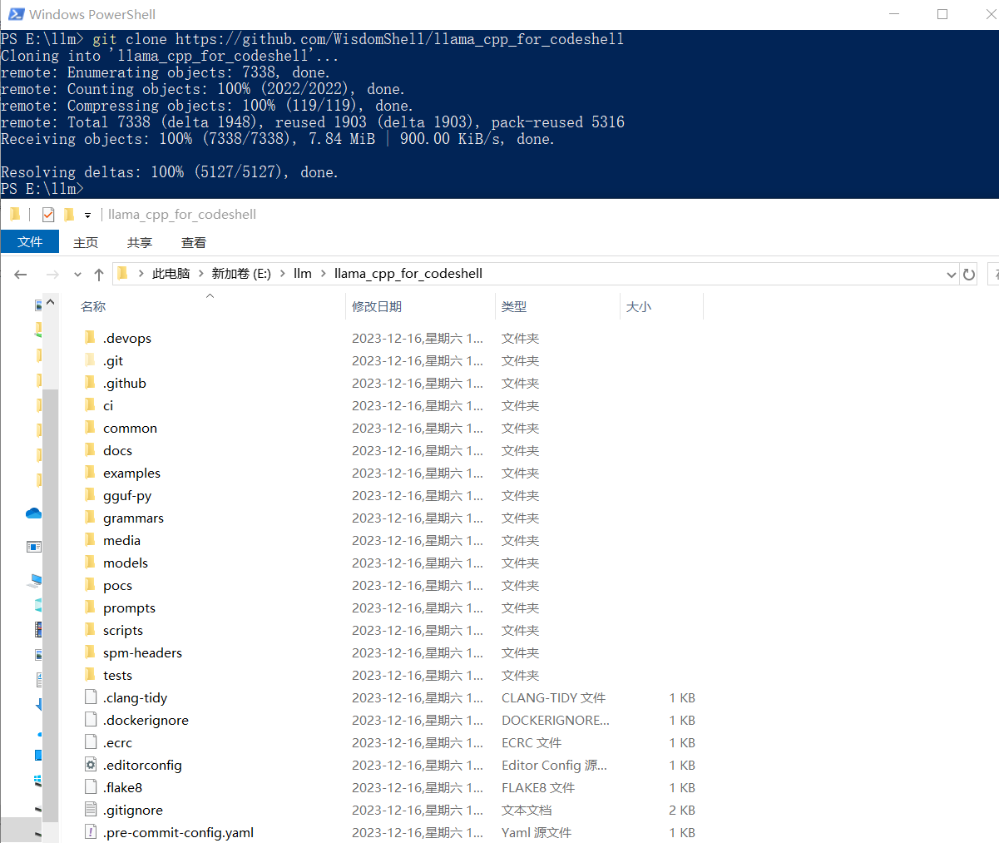
编译时参考llama.cpp - xiaodu114.github.io，如下图：
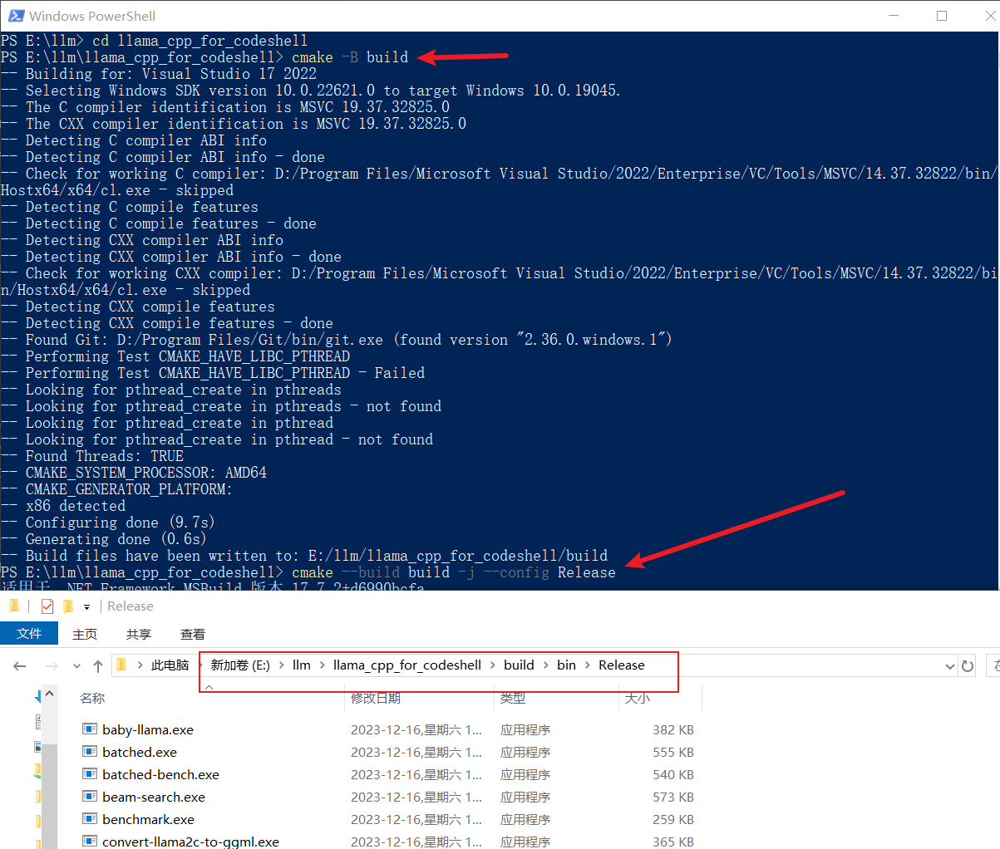
接着创建 Python虚拟环境、安装依赖并将模型权重转为GGUF
# 在这个目录：E:\llm\llama_cpp_for_codeshell
python -m venv venv
.\venv\scripts\activate
pip install -r requirements.txt
python convert.py D:\llm\WisdomShell\CodeShell-7B-Chat
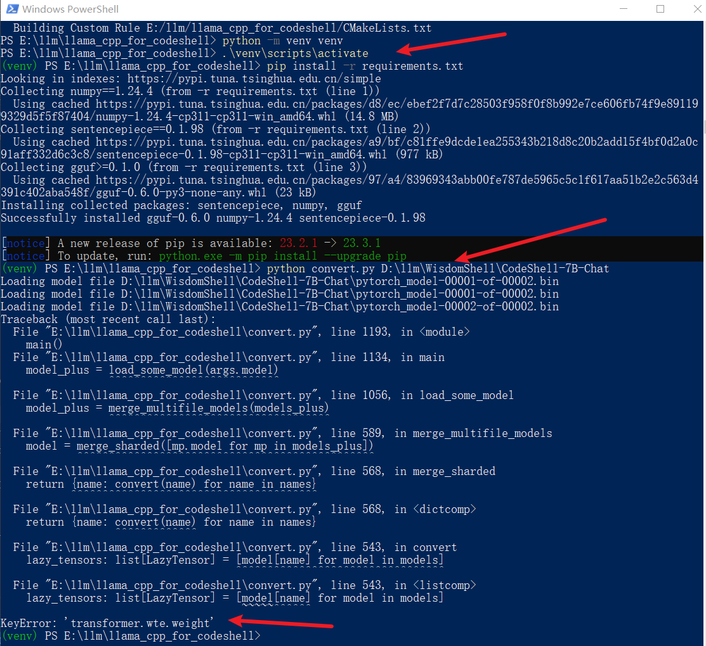
转换失败了，已经习惯了，是吧！这里没有去研究报错的原因，无意间发现了她……
上面的方式失败之后，无意间在hf-mirror.com - Huggingface 镜像站搜索
进入上面
./server.exe -m D:\llm\WisdomShell\CodeShell-7B-Chat-int4\codeshell-chat-q4_0.gguf --host 127.0.0.1 --port 10002
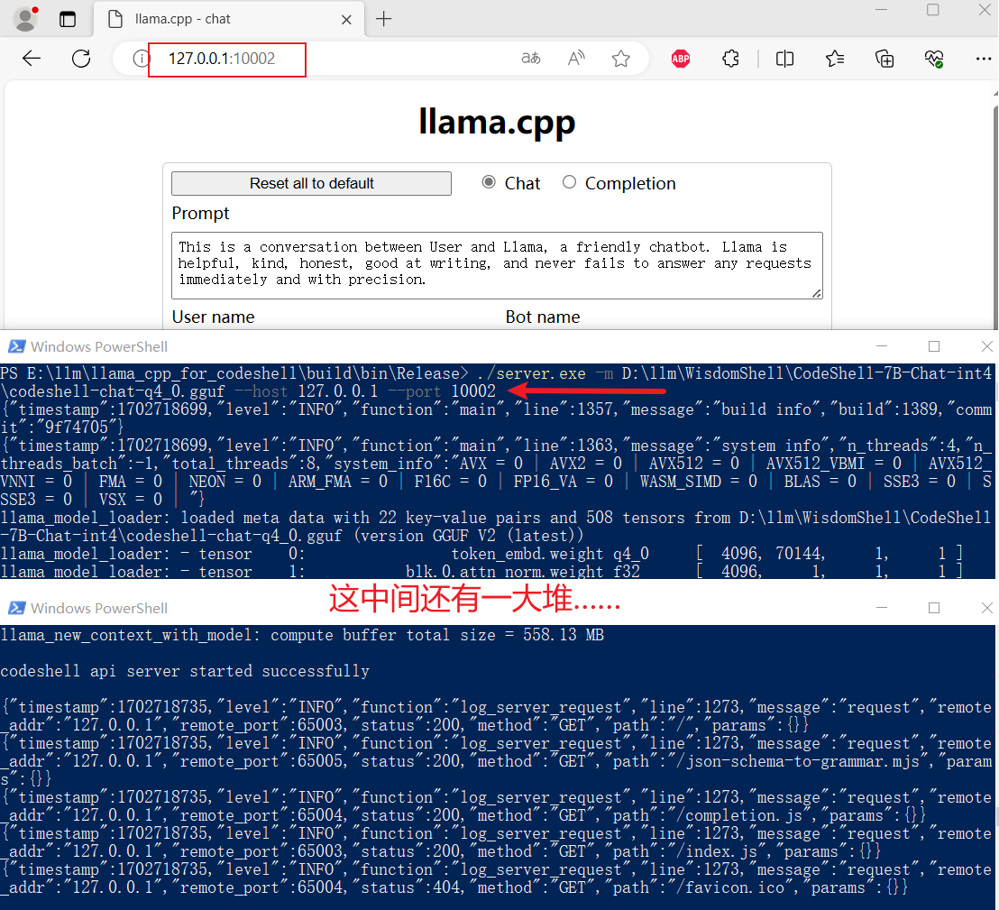
纯血版TGI：GitHub - huggingface/text-generation-inference
官方接口文档：Text Generation Inference API
WisdomShell版：GitHub - WisdomShell/text-generation-inference
这个项目简直了，部署实在是太曲折了，怪不得官网建议使用
参考文章：vllm vs TGI 部署 llama v2 7B 踩坑笔记、主流推理框架哪家强？看看它们在Llama 2上的性能比较
安装
# gcc版本检测
gcc --version
# 安装依赖
sudo apt install libssl-dev gcc pkg-config unzip
这个可以先去GitHub - protocolbuffers/protobuf: Protocol Buffers - Google's data interchange format。这里下载的是
# 在文件 protoc-25.1-linux-x86_64.zip 的目录进入终端
sudo unzip -o protoc-25.1-linux-x86_64.zip -d /usr/local bin/protoc
sudo unzip -o protoc-25.1-linux-x86_64.zip -d /usr/local 'include/*'
自己对
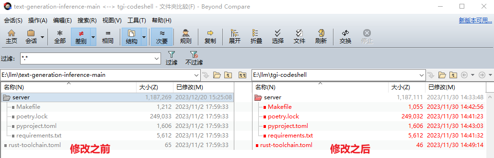
这里删除了
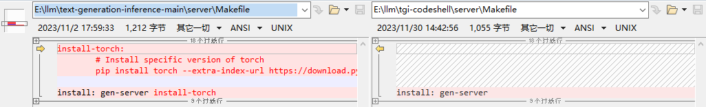
这个应该算是
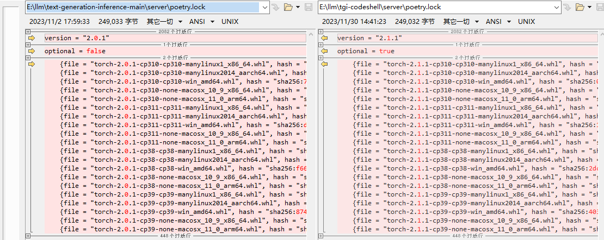
这个也是
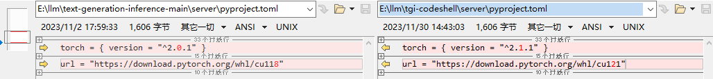
这个也是
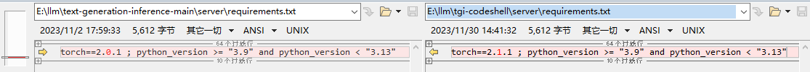
这里指定的
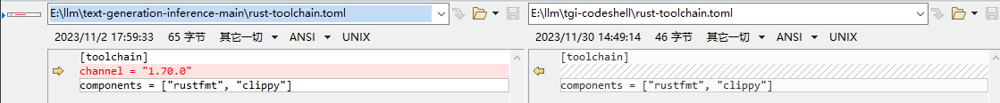
python3 -m venv venv
source ./venv/bin/activate
# 在上面激活的虚拟环境中执行
BUILD_EXTENSIONS=True make install
经过上面的修改，应该可以编译成功了。可以使用下面的命令检测一下：
text-generation-launcher --help
点击查看 text-generation-launcher --help 输出
编译成功之后还会
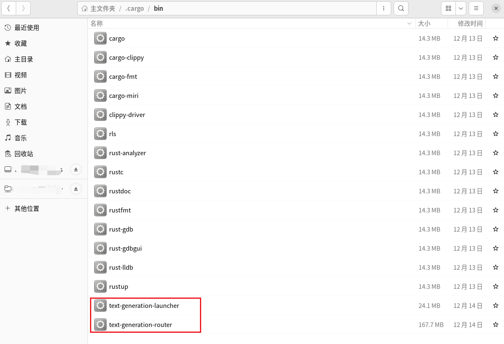
# tgi-codeshell目录打开终端
# 进入虚拟环境
source ./venv/bin/activate
# 启动 注意：替换自己的模型权重路径、IP地址、端口等
CUDA_VISIBLE_DEVICES=1 text-generation-launcher \
--model-id /llm/0-model/WisdomShell/CodeShell-7B-Chat \
--hostname 192.168.xxx.xxx -p 10002 \
--num-shard 1 \
--max-total-tokens 5000 --max-input-length 4096 \
--max-stop-sequences 12 \
--trust-remote-code
每次进入项目、打开终端、激活虚拟环境、启动，太繁琐了。弄一个sh脚本，“双击”启动，多爽。脚本内容如下：
#!/bin/bash
# 打开一个新的终端，并在指定目录进入虚拟环境venv
gnome-terminal --working-directory=/llm/2-code/tgi-codeshell -- /bin/bash -c 'source ./venv/bin/activate;
CUDA_VISIBLE_DEVICES=1 /home/xxx/.cargo/bin/text-generation-launcher \
--model-id /llm/0-model/WisdomShell/CodeShell-7B-Chat \
--hostname 192.168.xxx.xxx -p 10002 \
--num-shard 1 \
--max-total-tokens 5000 --max-input-length 4096 \
--max-stop-sequences 12 \
--trust-remote-code;
exec /bin/bash'
exit
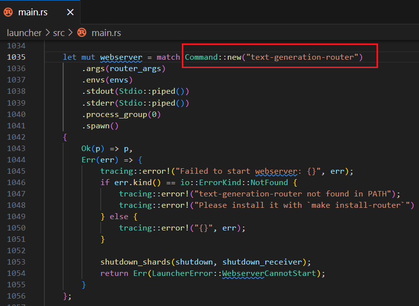
根据代码发现，应该是这里的问题：
项目地址：GitHub - WisdomShell/codeshell-vscode
怎么安装插件咱就不说了
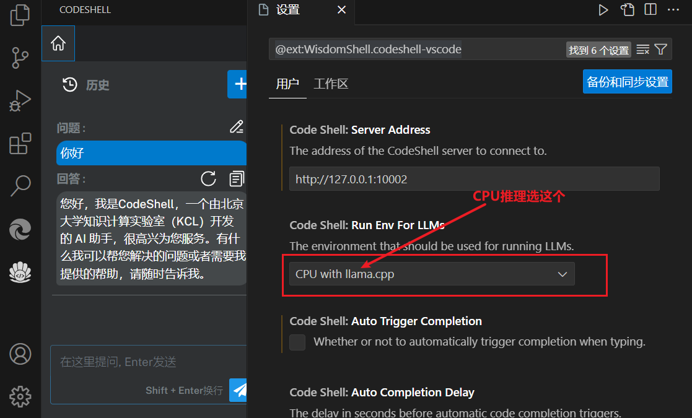
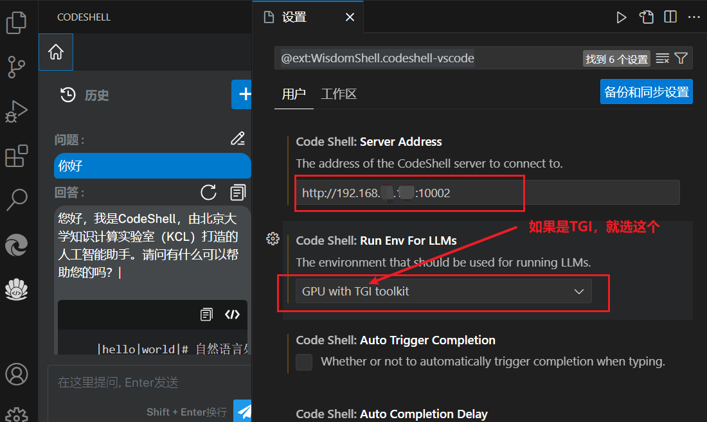